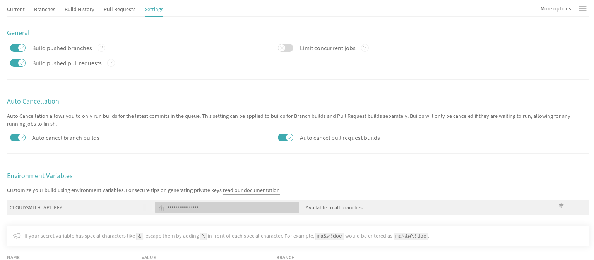

Developer Setup
Saved for reuse
Plugin Dev executes script to copy Cloudsmith metadate files to OpenCPN Container Project for an Integrated Plugin Management Facility {github.com/opencpn/plugins) so they can be added to the Plugin Management User Interface.
CIRCLECI (Build Account)
-
Open a (free) open-source account on circleci.com Signup with your GitHub account
-
You will be allowing CircleCI certain types of access to your GitHub account.
-
Start following your GitHub plugin project on Circleci.
-
In CircleCI
- Under settings create a "context" with [username]
- Prerequisites: Config.yml uses workflows and you must be an admin.
- Under settings "Enable Github Checks" [[https://circleci.com/docs/2.0/enable-checks/#section=projects|https://circleci.com/docs/2.0/enable-checks/#section=projects]]
- Under Settings > VCS > "Manage Github Checks"? Yes
- [[https://circleci.com/docs/2.0/managing-api-tokens/#section=projects|Environment Settings and API tokens]]
- Context- Contexts provide a mechanism for securing and sharing environment variables across projects. The environment variables are defined as name/value pairs and are injected at runtime. [[https://circleci.com/docs/2.0/contexts/|https://circleci.com/docs/2.0/contexts/]]
- In **//Project > Build Settings > Build Settings > Environmental Variables//** to set up security.
- See [[:opencpn:developer_manual:pi_installler_build_deploy#cloudsmith_api_key_generation_and_use|CLOUDSMITH_API_KEY Generation and Use]]
- Add environment variables to the job. You can add sensitive data (e.g. API keys) here, Private environment variables enable you to store secrets safely even when your project is public, see Building Open Source Projects for associated settings information. Use Contexts to further restrict access to environment variables from within the build, refer to the "Restricting a Context" documentation.
- [[https://circleci.com/docs/2.0/oss/|Building Open Source Projects]]
- Put your //**Cloudsmith Deployment Key**// in your //**Circleci account> Settings> [user]> squiddio_pi> Env Variables**// as "CLOUDSMITH_API_KEY" .
- The squiddio_pi/ci/circleci-upload.sh file uses the name "CLOUDSMITH_API_KEY"
- Typical Setttings: Since building a PR is one way to make sure it works, if someone wants to help you out, therefor please enable the //Build forked pull requests// option which should make circleci build all PRs. If //Pass secrets to builds from forked pull requests//, is Disabled, it will not be able to upload anything.

CLOUDSMITH_API_KEY Generation and Use
KEY #2 provides your BUILD service the ability to PUSH artifacts (tarballs, xml, packages) to your CLOUDSMITH repository.
Provide your unique CLOUDSMITH_API_KEY to other services such as CIRCLECI, TRAVIS and APPVEYOR to give them permission to DEPLOY to CLOUDSMITH.
-
Copy the API key from your CLOUDSMITH Account on https:cloudsmith.io] by - Get the key from cloudsmith account page. Click the user name icon, upper right, and you will be able to copy the key to clipboard. - Left click your logon-id in the top right of the cloudsmith main page - Then click 'API Key' - You will be asked for 'Elevated Privileges' and need to supply your password. - Then your key will be displayed. - Copy this (either select the whole key and copy or click the paper clip icon at the right hand end of the key line) - Now use your Cloudsmith key in the appropriate accounts below to provide access to Cloudsmith for deployment. - Sign into your CIRCLECI account on [[https:circleci.com|https:circleci.com]] * Select 'Settings' in the left hand vertical toolbar * Then 'Projects' * Then the settings icon (gear wheel) of the project (plugin_pi) you want to use. * Click 'Environment Variables' under 'BUILD SETTINGS', * Click "Add Variable" * Paste the Cloudsmith key into the Value Field.. * Add 'CLOUDSMITH_API_KEY' into the Name Field. * Close by clicking Add Variable. - Sign into your APPVEYOR account on appveyor.com [[https:appveyor.com|https:appveyor.com]] * First add the plugin project. The plugin name should show in the upper left. * From the plugin page go to Settings in the top menu. * Select Environment from the side menu. * Under Environment Variables select Add a Variable. * Paste the Cloudsmith key into the Variable Field and enter CLOUDSMITH_API_KEY into the Name Field. * Click Add Variable. - Sign into your TRAVIS account on [[https:travis-ci.org|https://travis-ci.org]
* Select the plugin project so that it shows at the top.(eg: weather_routing_pi)
* Select from the upper right "More Options". Then "Settings" from the dropdown.
* Scroll down to Environment Variables.
* Paste the Cloudsmith key into the Value Field and enter CLOUDSMITH_API_KEY into the Name Field.
* I select All Branches.
* Select Add. See the screenshot.

Once this is done the deploy to Cloudsmith should work.
Also, for manual actions, at the bottom of the packages list page, there’s an "X Per Page" selector, where you can change the setting from 25 packages to 500. So if you really needed a manual action to delete/copy/move many packages at once, you can do it like that.
Cloudsmith Repositories Examples
OpenCPN Plugin Repositories
-
https://cloudsmith.io/david-register/repos/opencpn/packages/[https:cloudsmith.io/david-register/repos/opencpn/packages/]] * [[https:cloudsmith.io/david-register/repos/opencpn-unstable/packages/|https://cloudsmith.io/david-register/repos/opencpn-unstable/packages/]
Summary of Process
-
Configure your plugin’s files by replacing cmake and circleci scripts and modify them appropriately.
-
Create free opensource accounts with circleci and cloudsmith, and set up opensource repositories.
-
Test building and deployment to the cloudsmith "beta" repository.
-
Use Opencpn with the PI Installer to open the new [ocpn-plugin.xml metadata catalog to confirm installation and test the plugin.
-
After testing, issue a new version, pushing new binaries to cloudsmith repositories, along with a new ocpn-plugin.xml catalog file.
-
See PI Installer Procedure Build-Deploy below, for more detail.
Add CMake and Script Files
FIXME
Your plugin will need to be augmented with new CMake and script files. There are two versions you can select from Frontend1 and Frontend2.
-
The main Frontend1 example is in github.com\bdbcat\oesenc_pi and a more annotated version is in rgleason/squiddio_pi branch frontend1
-
The main Frontend2 example is in github.com/jongough/testplugin_pi and more annotated ashttps://github.com/rgleason/squiddio_pi/tree/frontend2[github.com/rgleason/squiddio_pi Branch frontend2]
The simplest way is to copy the new files in ci & cmake to your system and make the requisite changes to the CMakeLists.txt, of which there shouldn’t be too many as it is really the individual plugins file, i.e. has all the customization in.
All changes for customisation should be constrained to the CMakeLists.txt file, because all the other files are parameter driven and so 'should' be the same between plugins. So all the files in the:
-
'cmake' directory, including the in-files directory, are the same for every plugin, there should be no customisation to these files. There are 'extra' cmake files which a plugin may use, i.e. FindPortaudio.cmake for the weather_routing_pi, but these are supplied by the plugin and are referenced vis CMakeLists.txt in the plugin customisation section.
-
'ci' directory should not require hand customisation as again all the files are parameter (global variable) driven
-
'.circleci' directory should not require hand customisation as again all the files are parameter (global variable) driven
-
'debian' directory should not require hand customisation
-
'mingw' directory should not require hand customisation
Updates of plugins require copying the above directories in place and then carefully updating the CMakeLists.txt file by referencing the testplugin_pi version to change it to the new format and include all the 'standard' parts that are needed. It should be quite easy to get it working, while testing on the web takes longer as jobs need to finish, to determine what needs fixing.
So if you look through the first section of the CMakeLists.txt you will see where you set the cloudsmith user and repository name as well as the 'special' stuff for the xml file. The next section down you may need to change a few default settings, i.e. 'USE_GL', or some special version of c++ that is needed. In the current file the following section (line 194 onwards) is where you define all the files to be used. You will need to keep 'SRCS' as the source list, but the rest of it is up to you. You will also need the last section which does the rest of the build and package process.
I would not try to 'combine' this process with any other in the same 'stream' or you are likely to have problems. When I make changes just copy the new files in place and, if needed, make the co-requisite changes to CMakeLists.txt .
The idea of this process is that it is a 'black box' to most and it should 'just work'. You will notice that I have changed the names of the repositories to '…-prod', '…-beta' and '…-alpha', it just seemed to match what was going into them. The destination repository is controlled by what you are doing, i.e. -
Any non-master branch network build -> alpha repository Master build without tag and non-master branch build with tag -> beta repository Master build with tag -> prod repository
All 'installation' files, 'deb', 'dmg', 'exe', etc will also go into the same repository, but they will have the current naming strategy, i.e. will start with 'opencpn-plugin-' the the rest of the descriptive name.
Download and Use the CMake and CI files listed below from Jon Gough’s Testplugin_pi using the "cmake_flatpak_test" branch. Download and install the files into a new branch on your plugin local repository.
Files -------------- CMakeLists.txt <----- Your version and this version will have to be merged. appveyor.yml travis.yml Directories and Files ---------------------- cmake circleci buildosx ci debian mingw api-16 data (icons)
Modify Files
Then the top of CMakeLists.txt must be customized for the plugin and environment. There are basically two sets of files for CMake that have been developed. One set comes from Alex Leamas and the other set comes from Jon Gough’s testplugin_pi which is being used as a template. Jon has gone to some effort to bring all the Plugin Dev settings up to the top of CMakeLists.txt The example below is from Jon’s testplugin_pi but needs to be updated!
CMakeLists.txt
project(testplugin_pi)
set(PACKAGE_NAME testplugin_pi)
set(VERBOSE_NAME testplugin)
set(TITLE_NAME testplugin)
set(CPACK_PACKAGE_CONTACT "Jon Gough")
set(VERSION_MAJOR "1") <---Set your version number and comment
set(VERSION_MINOR "0")
set(VERSION_PATCH "41")
set(VERSION_TWEAK "8")
set(VERSION_DATE "03/12/2019")
set(OCPN_MIN_VERSION "ov50")
set(OCPN_API_VERSION_MAJOR "1")
set(OCPN_API_VERSION_MINOR "16")
set(TP_COMMENT " * Release for O5 using CI")
set(PARENT "opencpn")
set(PACKAGE "testplugin") <--- Set plugin name (twice)
set(VERBOSE_NAME "Testplugin")
#set(GIT_USER "jongough") <--- Git user commented out
set(GIT_USER "rgleason") <--- Set your git user name
set(GIT_REPOSITORY_NAME "testplugin_pi") <---Set the Git Repository Name
message(STATUS "CIRCLECI: ${CIRCLECLI}, Env CIRCLECI: $ENV{CIRCLECI}")
if($ENV{CIRCLECI})
set(GIT_REPOSITORY_HOST "github.com")
set(GIT_REPOSITORY_DIR "${GIT_USER}/")
# set(GIT_REPOSITORY_BRANCH "master")
set(GIT_REPOSITORY_BRANCH "cmake_flatpak_test")
else()
set(GIT_REPOSITORY_HOST "git.eclipse.com.au") <--- This is used if you setup your own git server environment for testing
set(GIT_REPOSITORY_DIR "")
set(GIT_REPOSITORY_BRANCH "cmake_flatpak_test")
endif()
set(CLOUDSMITH_USER "rick-gleason") <--- Set your Cloudsmith Name
#set(CLOUDSMITH_BASE_REPOSITORY "${GIT_REPOSITORY_NAME}") <---Uses git repos name for Cloudsmith repositories
set(CLOUDSMITH_BASE_REPOSITORY "opencpn-plugins") <---Uses a generalized repository for multiple plugins.
set(XML_INFO_URL "https://opencpn.org/OpenCPN/plugins/ocpn_draw.html")
set(XML_SUMMARY "Test of ODraw ODAPI and JSON interfaces")
set(XML_DESCRIPTION "Test ODraw API and demo use from another plugin")
set(APPVEYOR_TEST_DEPLOY_TO_CLOUDSMITH "true")
circleci\config.yml
Your account does not have rights to run macos until CircleCI staff explicitly enables it. If you don’t have access to run the macOS enviornment that particular build will not start but all the others should run OK. //Therefore comment out the build for "macos" lines, until you ask for and are given permissions // by them to run limited use macos. First you need to create a real userid login in addition to your github login to get MacOS. See Build on macOShttps://circleci.com/open-source/[https:_circleci.com/open-source/]]_Then you need to write Circleci Support // to[[billing@circleci.com|billing@circleci.com] including your "Opensource" account, stating that you are creating only public OpenSource for OpenCPN and would like MacOS build capability.
+ Also write staff nicely asking if you can get permission for MacOS, and stating that the plugin is opensource for OpenCPN.
Line 39 start # build-macos: # macos: # xcode: "10.0.0" # environment: # - OCPN_TARGET: macos # steps: # - checkout # - run: ci/circleci-build-macos.sh # - run: ci/circleci-upload.sh
Line 65 start # - build-macos: # filters: # branches: # ignore: # - devel # - tmp
appveyor.yml
Generate a GitHub Personal Token specifically for Appveyor and your plugin. Save the code somewhere. Then encrypt the Github Personal Token with appveyor’s encryption, and put that encryption into the code as below.
deploy:
provider: release # or GitHub
auth_token: # git-ptoken-squiddio-into-appveyor [whatever you name it in GitHub]
secure: "<encryption from appveyor https://ci.appveyor.com/tools/encrypt>"
.travis.yml
Generate a GitHub Personal Token specifically for Travis and your plugin. Save the code somewhere. Then encrypt the Github Personal Token with Travis CI, and put that encryption into the code as below.
deploy:
- provider: releases
api_key: # git-ptoken-squiddio-into-travis [whatever you name it in GitHub]
secure: <add TravisCI encryption of git ptoken key>
repo: [username]/squiddio_pi #Deployment to GitHub Release Tag when a tag is pushed.
tags: true
all_branches: true
Cloudsmith OpenCPN Organization
There are 3 repositories that can be used.
Developers of Plugins can be invited to join the organization after they have created an opensource Cloudsmiith account.
Installation Destination change with Plugin Manager
Check your plugins for any changes needed to keep intended user experience when installing, noting path isssues.
Catalog XML "name" must match "Common Name"
The name used in the Plugin Manager XML Catalog must match the "Common Name" of the plugin being installed.
In order for the Plugin Manager to work consistently, the "name" tag in the catalog’s XML must match the "Common Name" of the plugin being installed. The (sometimes inconsistent) values in CmakeLists.txt do not affect the plugin manager at run-time. Example catalog xml record:
<plugin version="1"> <name> WeatherRouting </name> <version> 1.13.2 </version> <release> 0 </release> <summary> Plugin to complete optimal routing with weather files </summary> <api-version> 1.16 </api-version> <open-source> yes </open-source> <author> Sean d'Epagnier </author> <source> https://github.com/rgleason/weather_routing_pi </source> <description> Weather_Routing Plugin optimizes weather routing</description> <target>msvc</target> <target-version>10.0.14393</target-version> <tarball-url> https://dl.cloudsmith.io/public/rick-gleason/opencpn-plugins-beta/raw/names/weather_routing-msvc-10.0.14393-tarball/versions/1.13.2.+80.c284e85/weather_routing_pi-1.13.2.0-ov50-1.16_msvc-10.0.14393.tar.gz</tarball-url> <info-url> https://opencpn.org/OpenCPN/plugins/weather_routing.html </info-url> </plugin>
The name "WeatherRouting" must match the "Common Name" which comes from the source code, weather_routing_pi.cpp, in github:
wxString weather_routing_pi::GetCommonName()
{
return _("WeatherRouting");
}